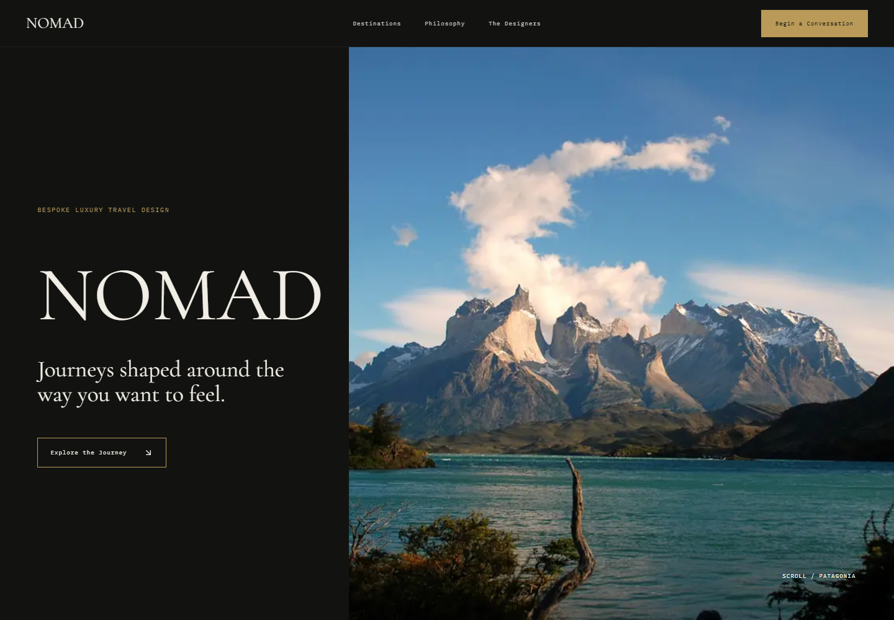
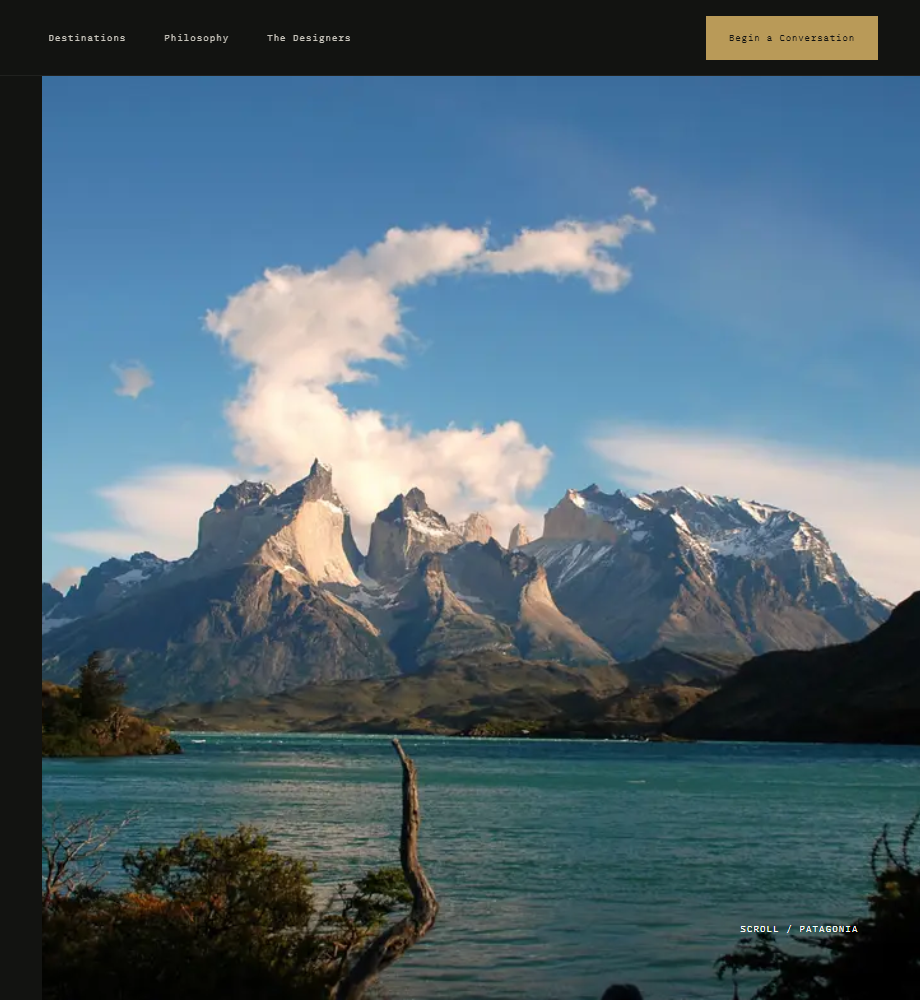
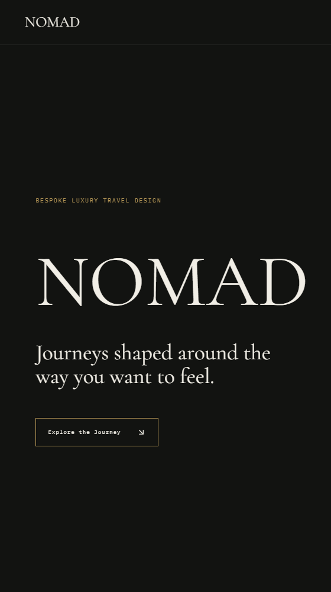

NOMAD
Journeys shaped around the way you want to feel.
A cinematic digital experience for discovering highly curated luxury travel, where destinations are revealed through atmosphere, quiet restraint, and visual pacing.

LUXURY TRAVEL STARTS BEFORE THE JOURNEY.
Most travel interfaces prioritize inventory and transactions. NOMAD explores a more editorial approach where destinations are discovered through atmosphere, narrative, and visual pacing.
When exploring rare or transformative journeys, travelers seek an emotional connection to the land first. NOMAD replaces rigid booking calendars with evocative visual narratives that spark genuine anticipation.
DISCOVER A FEELING BEFORE A DESTINATION.
Guests journey through states of contemplation, progressing seamlessly from landscape immersion into personalized expedition curation.

QUIET INTERFACE. CINEMATIC DESTINATIONS.
The visual system steps back to give dramatic landscapes absolute primacy:

Full-bleed imagery serves as the primary canvas, transporting the viewer directly onto the terrain.
Charcoal tones (#0e100f) recede visually, allowing glaciers, skies, and golden sunlight to resonate.
Refined typographic scale paired with generous line height for immersive storytelling.
Uncluttered margins and open breathing room echo the vast solitude of remote destinations.
Restrained navigation controls stay out of the way until the traveler intentionally interacts.
Transitions and composition rhythms designed for thoughtful discovery rather than hasty checkout.
THE INTERFACE STEPS BACK.
01 — Photography before interface
Atmosphere and natural landscapes establish the emotional anchor before controls and filters ever appear.
02 — Editorial pacing over dense navigation
Generous negative space and intentional vertical rhythms replace crowded navigation bars and overwhelming sidebars.
03 — Restraint over feature overload
Focus is deliberately concentrated on bespoke journey curation rather than mass catalog comparison tables.
04 — Destination mood before transaction
Inviting guests to feel the terrain and atmospheric silence before prompting private expedition enquiry.
RESTRAINED CONTROLS & EXPEDITION INQUIRY.
The right-hand interface panel features warm gold accents, concise expedition specs, and quiet booking inquiry touchpoints.
THE INTERFACE DISAPPEARS.
THE JOURNEY TAKES OVER.
By stepping back and letting cinematic landscape photography lead, NOMAD delivers a digital travel experience that feels as rare, tranquil, and memorable as the destination itself.